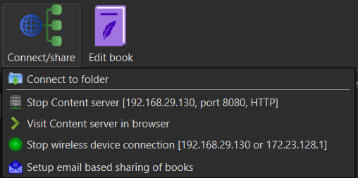
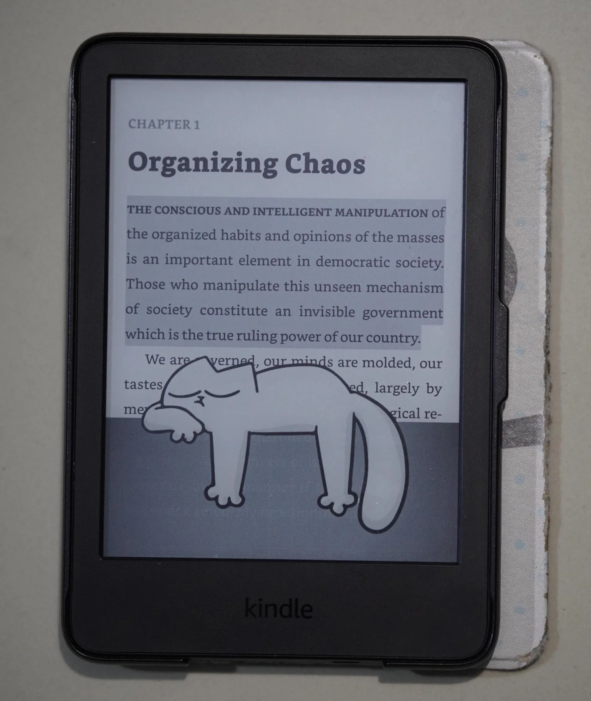

My Kindle Set-up
Jailbreak
The Kindle needs to be registered with a valid Amazon account. When prompted to turn WiFi network on, do so. If the Kindle is 7th Generation, the firmware should not update automatically. Go to Settings (in the shutter menu) -> Device Settings -> Device Info to check the firmware version of your device (should probably be 5.12.2.2 according to Kindle E-Reader Software Updates) and note it down. Turn on Airplane mode.
Follow the steps mentioned the Winterbreak section of the Kindle Modding Wiki to install Winterbreak. The Wiki should now take you step by step into all the post-Jailbreak setup, which are the following:
Post-Jailbreak
-
Hotfix installation (to prevent future automatic firmware updates)
-
Installing KUAL (Application Launcher) and MRPI (Package Installer)
- NOTE: If
;log mrpi does not work, reboot your Kindle first and try again.
-
Disabling OTA Updates
-
Re-enabling the Amazon Store
-
Installing KOReader (custom e-reader application)
Setting Up KOReader
KOReader Interface is essentially just a file explorer. I recommend making a "Books" folder or something similar in the root directory of your Kindle (by opening the Kindle's storage in your Computer) and organize your books there.
Syncing with Calibre
If you have your Calibre library set-up and wish to sync it with your Kindle, follow the steps below:
- Open Calibre, click on Connect/Share and start a wireless device connection (do not add any password).
- Click on Connect/Share again and start content server.
- Go to KOReader, do not have a book opened, stay in the file manager.
- Open the top menu and click on the magnifying glass icon -> OPDS Catalog.
- Here you have catalogs of different Libraries. You are going to be adding your Calibre Library here.
- Go to hamburger menu -> Add Catalog: Give a name to your Catalog (Calibre Library, e.g.). In Content URL, put the URL of the content server (check by going to Connect/Share in Calibre) in the following format:
192.168.29.130:8080/opds

- This tutorial was based on this nice grandpa's video, refer to it if you face any issues. Beware that he made a mistake in the middle and rather than editing it out he just apologizes a bunch of times and does it the right way.
Adding Oxford English Dictionary
- Download the OED and unzip it. Here is a download link I found.
- Connect to your computer, put the folder containing all the files in the
koreader/data/dict folder.
- Safely disconnect and select a text in KOReader to check its definition.
Tips
- Play around with the KOReader settings, get familiar with the controls. The UI is very well documented.
- Add gestures! I added corner tap gestures, where is you tap on the top-left corner, the book closes; top-right corner puts a bookmark, etc.
- Screen-savers! You can get really creative. Mine just shows the cover of the book I am currently reading (much like a physical book), but here are some community examples:
